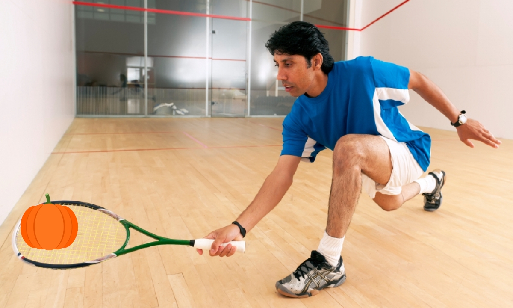

WHAT IS SQUASH?
SQUASH
IS IT A VEGETABLE?...

Along with being one of the healthiest foods, squash is also the name of the healthiest sport in the world,actively participated in by over 20 million people!
This is because matches typically last 30 minutes, which is the perfect amount of time to maximize cardio, strength-bulding, muscle-endurance, and improve stamina.
Also, injury risk is relatively low in squash - I've played squash for over 7 years -in all that time, I have only experienced one shoulder injury, which was due to playing the sport every day for a year.
When mixed with proper load management, squash can be the perfect excersise, stretch, or form of enjoyment for everyone.
Although it is objectively the hardest racket sport to play, once you understand the rules, squash will become the easiest sport to understand.
HISTORY
OF THE GAME

Photo of Jahangir Khan, the squash GOAT.
Squash was invented in 1830 by the harrow School in England.
By accident, the school realised that a slightly deflated ball would 'squash'
on impact against a wall.
The sport quickly travelled, reaching Asia and Europe, where legends were born,
and a competitive squash league was formed.
In 1880, the sport was introduced to North America, and a Canadian league
was founded in 1915.
Squash is the oldest modern-day racket sport ever created.
However, just because it is old does not mean it is ancient.
CANADIAN SQUASH PROS

Has participated in 10 PSA level tournaments.
Baillargeon is currently Sponsored by harrow.
Baillargeon was born in 1996. He is interested
in travelling, reading, nutrition and real estate.

Cornell communications alumni (2010-2014);
captian of Cornell squash team.
Born in Ontario, 1991, Sachvie is sponsored by Harrow.
Sachvie is coached by his father,
and is interested in spicy food, boxing and golf.

Canada's highest level squash representitive,
Naughton was born in Barnsley, England in 1994,
but was raised in Canada.
Currently, she is sponsored by Wilson.
Naughton is interested in bike rides and travelling.